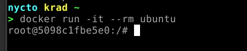
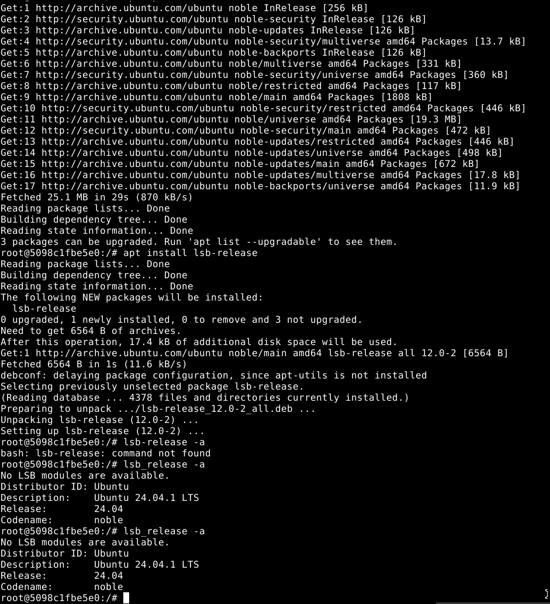
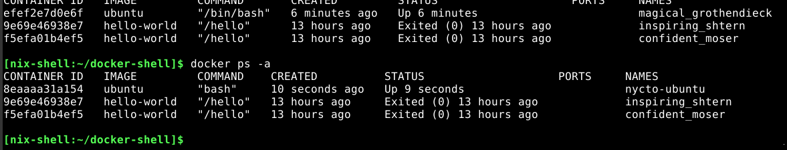
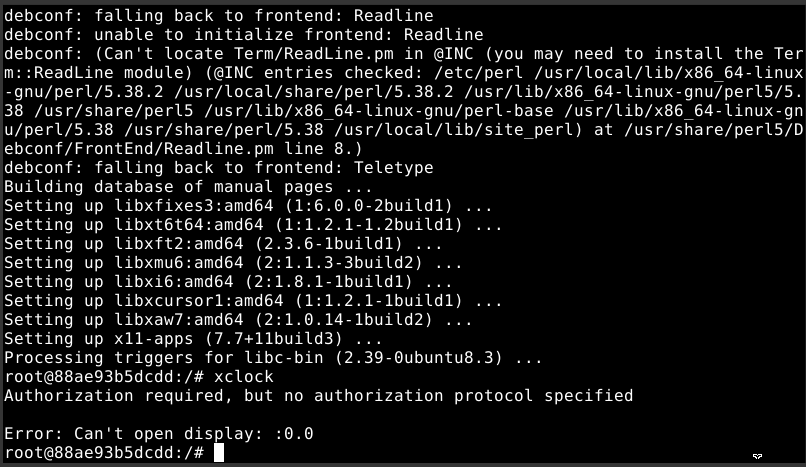
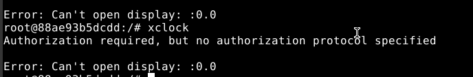
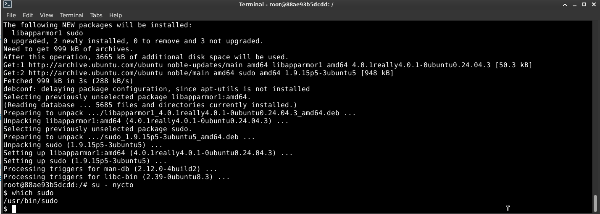
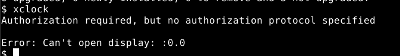
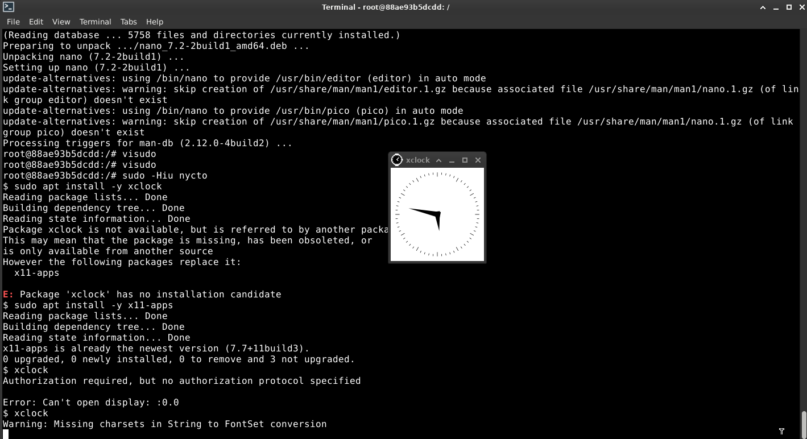

Hello there! From the last article, I mentioned NixOS, right? My machine fully supports NixOS, and my experiences so far have exceeded my expectations. There was a time when I needed to install an application in my NixOS environment and forgot that NixOS uses Nix to install packages, meaning only software from Nixpkgs is installable. So, what’s one elegant way to install software applications outside of Nixpkgs? and that would be using Docker. I don’t have any experience with Docker so far and ebzzry taught me the basics and techniques on how to use it, and I think delving it along the way is a good choice as part of your toolset as a developer.
Docker primarily runs through the command line interface (CLI), which is where you will find the most flexibility and control for managing containers—which allows to start quickly and use system resources more efficiently than traditional virtual machines. However, there are also graphical user interface (GUI) tools available that can help you manage Docker containers more easily, such as: Docker Desktop, Portainer and etc. depending on your needs. For me, I prefer to use it through my NixOS shell environment.
For NixOS users, I installed my Docker by adding this snippet through my NixOS configuration:
virtualisation.docker.enable = true;
users = {
extraUsers.specify-your-username = {
isNormalUser = true;
uid = 1000;
extraGroups = [ "docker" ];
};Don’t forget to save it once you already declare everything in your configuration then reboot your machine to take an effect:
$ reboot
After rebooting your machine, run your NixOS shell to ensure if Docker is already installed in your user environment by executing this commands:
$ docker info
$ docker ps
On this section we will be using Docker to install Ubuntu inside Docker containers—inside the NixOS. Fun right?
First, use the NixOS shell to install the latest Ubuntu Image:
$ docker pull Ubuntu
Second, make a directory on your $HOME, we can name the directory as docker-shell and make it separated to the NixOS shell. Meaning we have 1) NixOS shell and 2) Docker shell for this operation.
Inside the directory—*docker-shell*:
$ touch shell.nix
$ nano shell.nix
When editing the development environment configuration of our Docker shell, you may use this snippet:
{ pkgs ? import <nixpkgs> {} }:
pkgs.mkShell {
nativeBuildInputs = with pkgs.buildPackages; [ docker ];
}Then just run:
$ nix-shell
Use Docker shell and perform the commands respectively. The former is to list images so we can be able to know if Ubuntu Image exist or successfully installed. Lastly, is to show if you have any containers running:
$ docker images -a
$ docker ps -a
In NixOS shell:
$ docker exec -it ubuntu bash
NOTE: docker exec is for running commands directly inside the container, then it presents a shell for you to interact with. If this command doesn’t work on your end and received an error perform the next command below
$ docker run -it --rm ubuntu

Inside the container:
$ lsb_release -a
/NOTE: If you received an error lsbrelease: command not found. Do this inside the container to install the missing command:
$ apt update
$ apt install lsb-release
$ lsb_release -a

Great! You now have Ubuntu inside NixOS and now we’re going to install some appplication inside it.
NOTE:When you exit the container created with docker run -it –rm ubuntu, it won’t exist anymore because of the –rm flag, which automatically removes the container upon exit. This ensures the name is available for reuse. Without –rm, the container remains after exiting, and you cannot reuse the name “ubuntu.” again. The idea is that while the container is running with that command, you can save its state using docker commit.
If you wish to give a names on each of your containers you may now exit:
$ exit
Then:
$ docker run -it --name nycto-ubuntu --rm -e DISPLAY -v /tmp/.X11-unix:/tmp/.X11-unix --device=/dev/dri:/dev/dri ubuntu bash
To check the changes:
$ docker ps -a
You will likely to get a result exactly like this: 
As you can see our containers have different names now compare to the former by using the command above. Thank you to ebzzry for cooking this command for me.
Next, Inside the container:
$ apt update
$ apt install -y x11-apps
$ xclock
Expected Error:  When you received this kind of error, Do this on a separate terminal/NixOS shell:
$ xhost +localhost
Then run xclock, again, in the previous
terminal/NixOS shell. The one that’s inside the container.
If you don’t have xhost yet inside your NixOS:
nix profile install nixpkgs#xorg.xhostTo check if it is already available on your environment:
$ which xhost
If you received this kind of error: 
Do this command to create the root user:
$ useradd -m <your-user-name>
$ passwd <your-password>
$ su - <your-user-name>
Inside it:
$ sudo -l
$ echo $PATH
If sudo command is not found, Run this inside the container:
$ bash
Inside Bash:
$ which sudo
If it is still not found, Type exit command to go back to root. You may exit twice because we have already now two shells.
Then on the root execute this command:
$ apt install -y sudo
Go switch again on the root user:
$ su - <your-user-name>
Inside the user:
$ which sudo

Execute this again:
$ sudo -l
/NOTE: If you received an error like: Sorry, user <userame> may not run sudo on <Container ID>
Go back again on the root and execute this command:
$ visudo
Add this line:
<your-user-name> ALL = (ALL:ALL) NOPASSWD: ALL/NOTE: if there is an error about—no editor found (editor path usr/bin/editor)
Install this:
$ apt install -y nano
When you added the line and already exit the editor:
$ sudo -Hiu <your-user-name>
Install xclock:
$ sudo apt install -y xclock
NOTE: if you received something like this: Package xclock has no installation candidate. Do the command below.
Install x11-apps:
$ sudo apt install -y x11-apps
This command installs a collection of X11 applications, which are graphical tools designed for the X Window System. These utilities are useful for testing and running graphical applications.
Then:
$ xclock
If you have this error, Go to NixOS shell, and execute xhost +, then execute xclock again inside container. 
This is what xclock look like: 
This is a GUI app from the guest OS (Ubuntu) connected to the host OS (NixOS). We have already installed an application inside Ubuntu using containers. In the first attempt, especially to the beginner it would take time, but after experimenting with each process, I found that everything could be done in just a matter of minutes. That’s why containers are said to be so fast. You can freely experiment with them and install anything you want.